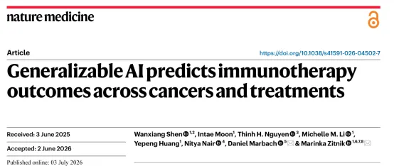
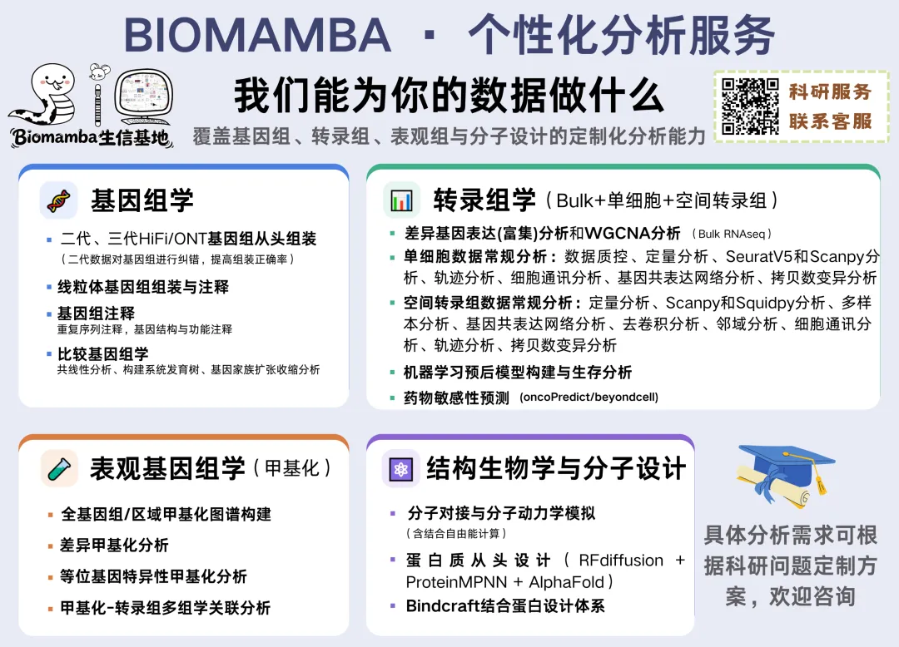
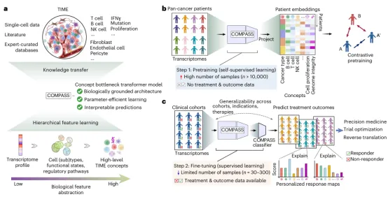
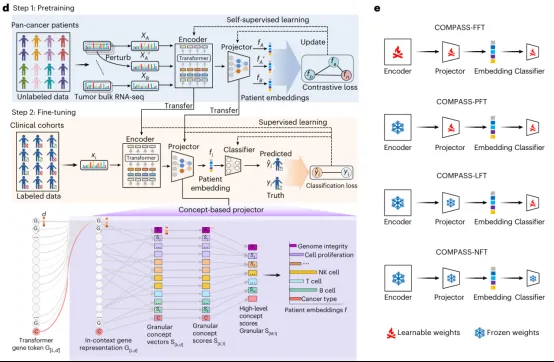
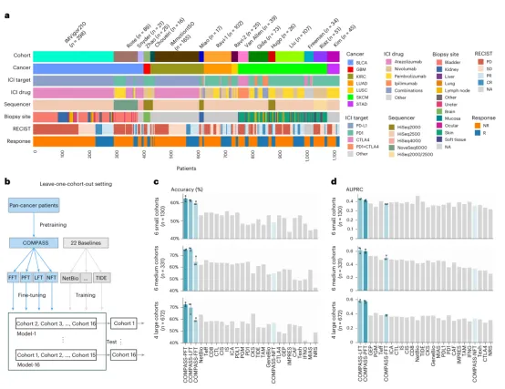
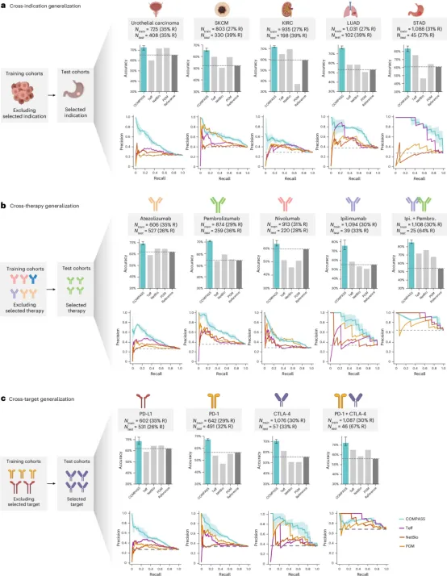
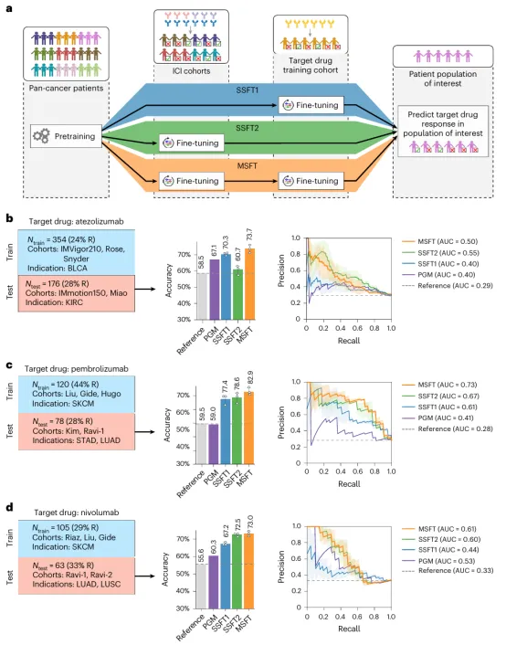
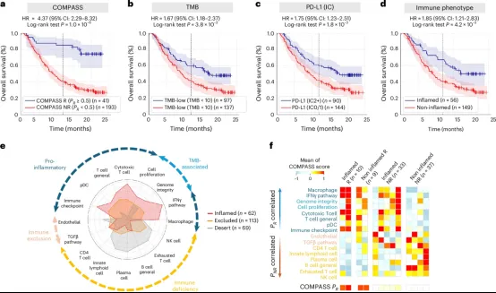

《Nature Medicine》发布AI模型COMPASS——直接预测癌症及治疗方案下的免疫治疗结果
原文：https://mp.weixin.qq.com/s?__biz=MzAwMzIzOTk5OQ==&mid=2247539316&idx=1&sn=2e3f1eb8d593cfbfc762764e46e038be&chksm=9b3c2324ac4baa3271d26f1260f1e2cfed8fdd286e93e439fb850b0dc6f1e5035d82b14bef76#rd 合集：文献速递
一、写在前面
本次分享的是发布于《Nature Medicine》（IF=52.1）的文章，感兴趣的同学可以看看原文："Generalizable AI predicts immunotherapyoutcomes across cancers and treatments"
DOI：**10.1038/s41591-026-04502-7 **

**免疫检查点抑制剂（ ICIs）**为癌症治疗带来了突破，但只有部分患者能获得长期效果，如何提前筛选出真正受益的患者一直是难题。目前临床常用的两个预测指标——肿瘤突变负荷（ TMB）和PD-L1表达——准确性都不够高：有些TMB很高的肿瘤仍然对治疗没反应，而一些TMB很低的肿瘤反而应答良好；其他基于基因表达的预测模型（如TIDE、IMPRES等）虽然能提供一些机制上的解释，但换到不同癌种上预测效果就不稳定了。一项对近3万名患者的大型分析也证实，这些常用指标与患者是否应答之间的关系其实并不可靠。更重要的是，现有的很多预测模型往往只能用于某一种癌症，或者依赖固定的基因组合打分方式，缺乏通用性——换个癌种或换种治疗方式就不好用了。
为解决这个问题，研究团队开发了COMPASS ，这是一个能"跨癌种通用"的AI模型。特别之处在于，不是简单地把基因数据丢给黑箱模型出结果，而是先把患者的基因表达数据"翻译"成人类能看懂的免疫概念（比如T细胞浸润程度、免疫抑制信号强弱等），再基于这些概念来预测治疗效果——这样医生不仅能知道"会不会有效"，还能看懂"为什么"。团队先用33种癌症的海量基因数据对模型进行预训练，再用小规模临床数据做微调。在涵盖7种癌症、1133名患者的测试中，COMPASS的预测准确率和综合表现超过了22个同类模型；在一项独立的膀胱癌临床试验验证中，被COMPASS预测为"有效"的患者实际生存期显著更长，预测能力也超过了传统的TMB和PD-L1检测。此外，COMPASS还能给出个体化的解释报告，说明每个患者对治疗有效或无效背后的具体免疫机制，帮助解开一些用传统方法很难解释的"意外"病例（比如免疫表型看起来正常却不起效的情况）。** **总的来说，这项研究证明了 AI模型可以做到既通用（跨癌种、跨治疗方案）又可解释，为免疫治疗的精准选人提供了新思路。
如果需要单细胞数据分析教学、生信热点全文复现、自测数据个性化分析辅导、实验科研服务和常态化实验学习，欢迎联系后台。

二、主要内容
**一：**COMPASS ：用于免疫治疗应答预测的概念瓶颈Transformer模型
预测患者对免疫治疗是否有效，一直是个棘手的问题——一方面临床上能收集到的病例数量有限，另一方面患者个体差异很大，肿瘤和免疫系统之间的相互作用又十分复杂，很难用简单的规则去概括。为了应对这些挑战，作者提出了 COMPASS模型（Fig.1a）。核心思路是：先在大规模、多癌种的肿瘤转录组数据上做预训练，同时把模型结构设计成基于免疫和基质相关生物学概念的形式，而不是一个纯粹的"黑箱"。这样的设计既能让模型具备更好的跨场景适应能力，又能在迁移到具体临床任务时只需调整少量参数，同时保持结果的可解释性。
为了让模型的判断有真实的生物学依据，作者从已有文献中系统整理出132个基因特征集。这些特征集分别对应不同的免疫细胞类型、细胞功能状态、信号通路，以及一些非免疫相关的肿瘤生物学特性（比如肿瘤基质的活动情况、DNA损伤修复机制等）。正是这132个特征集，构成了 COMPASS用来"理解"肿瘤—免疫关系的基本词汇表（Fig.1b）。
具体实现上，COMPASS采用了一种类似语言模型的Transformer结构，用来处理15,672个蛋白编码基因的表达数据。模型首先把这些基因的表达信息编码成向量，然后将其映射到前面提到的132个基因特征集上；接着，通过一个分层的"汇总"模块，把这132个特征进一步归纳为43个更高层次的概念，作者称之为 "肿瘤免疫微环境"（TIME）概念。除此之外，模型还额外加入了一个表示"癌症类型"的标记，作为第44个概念维度。这样一来，每一位患者的基因表达数据最终都会被压缩成一个44维的向量，这个向量就代表了该患者独特的肿瘤免疫状态（Fig.1c）。
在训练方式上，作者先利用癌症基因组图谱（TCGA）中10,184例肿瘤样本的转录组数据，通过自监督对比学习 的方法对COMPASS进行预训练。简单来说，这种方法的原理是：对同一个肿瘤样本做一些轻微的数据扰动（相当于生成"变体"），让模型学着把这些变体在44维概念空间里尽量拉近；同时，不同肿瘤样本的表征则要尽量拉开距离。通过这种"求同存异"的训练方式，模型逐渐学会了如何用这44个概念去刻画不同患者的肿瘤免疫特征。
预训练完成之后，再用真实的临床队列数据对COMPASS做微调，让它能够预测患者对免疫治疗的实际应答情况。具体做法是：把每位患者的44维概念表征作为输入，模型输出一个应答概率。考虑到不同临床队列的样本量差异很大，采用了灵活的微调策略——样本量大的队列做完整微调，中等规模的队列只更新部分参数，而样本量很小的队列则只训练一个轻量的适配模块，从而尽量避免过拟合。另外，如果某个队列根本没有治疗结果数据，COMPASS还支持一种"零样本"预测方式：直接在概念空间中检索相似患者，来推断可能的治疗效果（Fig.1d-e）。


Figure 1.
** **
**二：**COMPASS 在16个免疫治疗队列中实现了最优性能
作者收集了16个临床队列共1,133例患者的治疗前肿瘤RNA-seq数据及临床应答结果（Fig.2a），为评估COMPASS的预测性能，作者将其与22种目前常用的ICI应答预测方法进行了对比，这些方法涵盖单基因预测指标、免疫特征评分方法以及网络/机器学习模型等多种类型（Fig.2b），之后从准确率、 AUPRC（精确率-召回率曲线下面积）、ROC曲线下面积（AUC）以及马修斯相关系数（MCC）四个指标来评估各模型的表现，结果显示，无论队列规模大小、无论采用哪种评估指标，COMPASS的表现都明显优于现有的ICI应答预测方法（Fig.2c-d），接下来，作者评估了当训练数据仅限于单个队列时，COMPASS预测免疫治疗应答的准确性。为此采用了两种基准测试策略：队列内留一患者验证 （intra-cohort leave-one-patient-out validation）和跨研究的队列间迁移 （cohort-to-cohort transfer）。在队列间迁移分析中，作者用在某一个队列上训练好的模型，去预测另一个不同队列中患者的应答情况，总共构成了240组两两迁移评估（Fig.2e-f）。结果显示，COMPASS-LFT表现最佳，在240组测试中有163组实现了成功迁移；紧随其后的是COMPASS-PFT，成功迁移155组。这些结果明显优于此前发表方法中表现最好的几种（Fig.2g-h）。


Figure 2.
**三：**COMPASS 可跨癌种、跨治疗方案及跨药物靶点预测治疗应答
要使预测模型真正具备临床实用价值，就必须能够克服不同研究间在生物学和技术层面的异质性，实现跨癌种、跨治疗方案以及跨免疫检查点靶点的泛化能力 。为此，作者按照癌症类型、治疗方案和免疫检查点靶点对患者进行分层，从这几个具有重要临床意义的维度评估了模型的泛化能力。首先评估了在跨适应症预测任务 （Fig.3a），结果表明，COMPASS能够区分出抗肿瘤免疫中具有普遍意义的可泛化特征，而非仅仅捕捉到某一适应症特有的转录组变异。在跨治疗方案和跨靶点评估中**（ Fig.3b-c）**中，，COMPASS-PFT同样展现出良好的泛化能力——例如，仅用PD-1/PD-L1相关队列训练的模型，在预测抗CTLA-4治疗应答时仍取得了70.8%的准确率。

Figure 3.
** **
**四：**多阶段微调策略提升了对新疗法和新癌种的预测能力
在药物临床开发阶段，早期试验往往只能提供有限的靶点特异性数据，这使得适应症选择和患者富集变得十分困难。为了解决这一问题，COMPASS采用了多阶段微调策略（ multi-stage fine-tuning, MSFT），以便利用小规模临床队列数据构建稳健、针对特定治疗方案的预测模型，之后作者针对三种ICI药物开发了专属的预测模型：阿替利珠单抗（atezolizumab，抗PD-L1）、帕博利珠单抗（pembrolizumab）和纳武利尤单抗（nivolumab）（后两者均为抗PD-1药物）。具体流程是：先进行预训练，再在排除目标药物 /药物类别的ICI队列上做微调，然后针对单一目标药物队列做进一步精细调整，最后在使用同种药物治疗的、被留出的独立队列上进行测试。 结果显示，MSFT的表现优于单阶段微调策略以及现有的药物特异性模型（Fig.4b-d）。

Figure 4.
**五：**COMPASS 可预测生存期，并揭示传统免疫表型之外的耐药机制
在上文基础上，作者进一步将COMPASS应用于IMvigor210 ——一项针对转移性尿路上皮癌患者、评估阿替利珠单抗（抗PD-L1）疗效的II期临床试验数据——以此作为独立验证集，检验COMPASS是否能够预测患者长期生存，并揭示潜在的耐药机制。结果显示，被COMPASS判定为应答者的患者，其总体生存期明显优于无应答者（Fig.5a），明显优于TMB，PD-L1 IC2+评分和基于免疫组化的免疫表型分类（Fig.5b-d）。为探究哪些免疫学特征支撑了COMPASS的预测结果，作者还根据CD8+ T细胞浸润模式将肿瘤分为三种传统免疫表型，包括炎症型肿瘤，荒漠型肿瘤和免疫排斥型肿瘤（Fig.5e-f）。

Figure 5.
**六：**COMPASS 生成个体化响应图谱，解释单个患者的预测结果
最后作者开发了一种"个体化响应图谱"，用于追踪COMPASS如何通过其概念瓶颈架构，将患者特异性的基因表达信息层层传递至最终的预测结果。这一追踪过程贯穿五个层次：基因表达 → 编码器表征 → 细粒度免疫概念 → 聚合后的TIME概念 → 最终的应答概率。作者针对图5f中各个免疫应答聚类的代表性患者，分别生成了个体化响应图谱。包括炎症型应答者（Fig.6a），免疫荒漠型应答者（Fig.6b）, 炎症型无应答者（Fig.6c）,免疫荒漠型无应答者（Fig.6d）。这些 "激活响应图谱"将具体的基因表达与相应的免疫概念激活直接关联起来,不仅为每一次预测结果提供了机制层面的解释依据,也为后续的假设生成和机制探索提供了有力的支持。
三、总结讨论
免疫检查点抑制剂（ ICI）虽然改变了癌症治疗格局，但只有少数患者能获得持久应答，而现有的预测指标——如肿瘤突变负荷（TMB）、PD-L1表达以及各类免疫基因特征评分——普遍存在预测准确性有限、跨癌种表现不稳定的问题，且大多局限于单一癌种或依赖固定的基因打分方式，难以真正推广到不同的临床场景中。为解决这一难题，研究团队开发了COMPASS ——一个基于概念瓶颈架构的泛癌种基础模型。该模型先从文献中整理出132个基因特征集，用Transformer结构将患者的转录组数据编码后逐层映射为43个可解释的"肿瘤免疫微环境"（TIME）概念，再通过自监督对比学习在33种癌症、超万例肿瘤样本上进行预训练，最终结合参数高效的多阶段微调策略，迁移应用到具体的小规模临床队列中，从而实现对ICI治疗应答的预测。
在涵盖7种癌症、16个临床队列共1,133例患者的系统评估中，COMPASS在留一队列验证、队列间迁移、跨癌种/跨治疗方案/跨药物靶点预测等多种场景下，均全面超越了22种现有的主流预测方法，准确率和AUPRC分别平均提升8.5%和15.7%；在一项独立的膀胱癌II期临床试验验证中，COMPASS预测的应答者展现出显著更长的生存期（风险比达4.7），预测效力明显优于TMB和PD-L1免疫组化等传统指标。更重要的是，COMPASS不仅能给出"是否应答"的判断，还能生成个体化的"响应图谱"，将基因表达与具体的免疫机制概念相连，从而解析出许多传统免疫表型分类无法解释的"意外"病例——例如揭示出炎症型肿瘤中依然存在TGFβ介导的免疫抑制或血管排斥等耐药机制。
这项研究表明，将转录组数据与结构化的生物学先验知识相结合，可以打造出兼具高准确性、强泛化能力与可解释性的免疫治疗预测工具，为未来ICI治疗中的精准患者筛选提供了新的技术路径。

如何联系我们

 留一个领取资料、开箱即用的单细胞分析镜像的微信号[Biomamba_zhushou]，方便各位随时交流。同时我们也构建了交流群矩阵，欢迎大家入群讨论。
大家可以阅读完这几篇之后添加给生信入门初学者的小贴士没有检索，就没有发言权
留一个领取资料、开箱即用的单细胞分析镜像的微信号[Biomamba_zhushou]，方便各位随时交流。同时我们也构建了交流群矩阵，欢迎大家入群讨论。
大家可以阅读完这几篇之后添加给生信入门初学者的小贴士没有检索，就没有发言权
已有生信基地联系方式的同学无需重复添加

 您点的每个赞和在看，我都认真当成了喜欢
您点的每个赞和在看，我都认真当成了喜欢